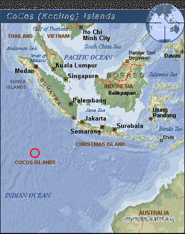
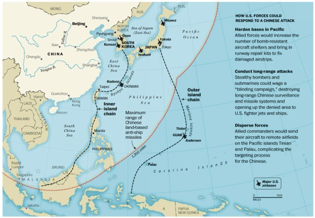
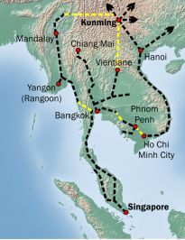
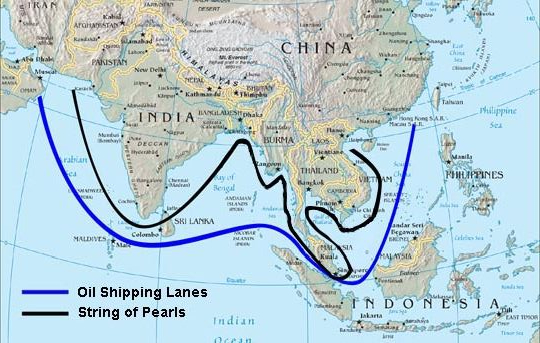

Chapter Seven:
Military wars – South China Sea, Indian Ocean and the Pentagon’s “String of Pearls’ Strategy
China today, because of its dynamic economic growth and its determination to pursue sovereign Chinese national interests, is a challenge merely by existing. Thus it has become the Pentagon’s new “enemy image,” along with Russia, and the false “enemy image” of Islam, which was used after September 2001 by the Bush-Cheney Administration to justify the Pentagon’s global power pursuit. The new US military posture against China has nothing to do with any aggressive threat from the side of China. The Pentagon has decided to escalate its aggressive military posture towards China merely because China has become a strong, vibrant, independent pole in world economics and geopolitics.
The Pentagon Targets China
Since the collapse of the Soviet Union and the nominal end of the Cold War some twenty years back, rather than reducing the size of its mammoth defense spending, the US Congress and US Presidents have enormously expanded spending for new weapons systems, and increased permanent military bases around the world. The US has expanded NATO not only to former Warsaw Pact countries on Russia’s borders, but also has expanded the NATO and US military presence deep into Asia, on the perimeters of China, through its conduct of the Afghan war and related campaigns.
Leaving aside the huge budgets for national security and defense-related agencies such as the Department of Energy, US Treasury and others, the US Department of Defense spent some $739 billion in 2011 on its military requirements. If all other spending on defense and national security is included, the London-based International Institute for Strategic Studies estimates US military spending at over $1 trillion annually. That is an amount greater than the total defense-related spending of the next 42 nations combined, and more than the Gross Domestic Product of most nations.
China officially spent barely 10% as much as the US on defense, some $90 billion, or if certain defense-related arms import and other costs are included, perhaps $111 billion a year. Even if the Chinese authorities do not publish complete data on such sensitive areas, it is clear China spends a small fraction of the US budget, and is starting from a military technology base far behind the USA.
The US defense budget is not only the world’s largest by far. It also bears no relation to any perceived threat. In the nineteenth century, the British Royal Navy built the size of its fleet according to the fleets of Britain’s two most powerful potential enemies; America’s defense budget strategists declare it will be “doomsday” if the United States builds its navy to anything less than five times China and Russia combined.[246]
If we include the spending by Russia, China’s strongest ally within the Shanghai Cooperation Organization, their combined total annual defense spending is barely $142 billion. The world’s top ten defense spending nations – after the USA as largest and China as second largest – include the UK, France, Japan, Russia, Saudi Arabia, Germany, India and Brazil. In 2011 the military spending of the United States equaled a staggering 46% of total defense spending by the world’s 171 governments and territories, almost half the entire world’s budget.[247]
Clearly, for all its rhetoric about “peace-keeping” missions and “democracy” promotion, the Pentagon is pursuing what its planners refer to as “Full Spectrum Dominance,” the total control of all global air, land, and ocean space, as well as outer space and now cyberspace.[248] It is clearly determined to use its military might to secure global domination or hegemony. No other interpretation is possible.
Because of its dynamic economic growth and its determination to pursue its sovereign national interests, China’s very existence poses a challenge. Thus it has become the Pentagon’s new “enemy image,” along with Russia, and the false “enemy image” of Islam, which was used after September 2001 by the Bush-Cheney Administration to justify the Pentagon’s global power pursuit. The new US military posture against China has nothing to do with any aggressive threat from the side of China. The Pentagon has decided to escalate its aggressive military posture towards China merely because China has become a strong, vibrant, and independent pole in world economics and geopolitics.
The Obama Doctrine: China is the New “Enemy Image”
After almost two decades of neglecting its interests in East Asia, the Obama Administration announced in 2011 that the US would make “a strategic pivot” in its foreign policy to focus its military and political attention on the Asia-Pacific region, particularly Southeast Asia, that is, China.
During the final months of 2011 the Obama Administration publicly defined a new threat doctrine for US military readiness, in the wake of US military failures in Iraq and Afghanistan. During a Presidential trip to the Far East, while in Australia, the US President unveiled what is being termed the Obama Doctrine.[249]
The following sections from Obama’s speech in Australia are worth citing in detail:
With most of the world’s nuclear power and some half of humanity, Asia will largely define whether the century ahead will be marked by conflict or cooperation… As President, I have, therefore, made a deliberate and strategic decision – as a Pacific nation, the United States will play a larger and long-term role in shaping this region and its future… I have directed my national security team to make our presence and mission in the Asia Pacific a top priority... As we plan and budget for the future, we will allocate the resources necessary to maintain our strong military presence in this region. We will preserve our unique ability to project power and deter threats to peace… Our enduring interests in the region demand our enduring presence in the region.
The United States is a Pacific power, and we are here to stay. Indeed, we are already modernizing America’s defense posture across the Asia Pacific. It will be more broadly distributed – maintaining our strong presence in Japan and the Korean Peninsula, while enhancing our presence in Southeast Asia. Our posture will be more flexible – with new capabilities to ensure that our forces can operate freely. And our posture will be more sustainable, by helping allies and partners build their capacity, with more training and exercises. We see our new posture here in Australia… I believe we can address shared challenges, such as proliferation and maritime security, including cooperation in the South China Sea.[250]
The centerpiece of Obama’s visit was the announcement that at least 2,500 elite US Marines will be stationed at Darwin, in Australia’s Northern Territory.
The Pentagon’s Target is China.
Phillip Hammond, the UK Secretary of State for Defence, made make the point clear to fellow NATO members in July 2012. At a meeting in Washington, he explicitly declared that the new US defense shift to the Asia-Pacific region was aimed at China. Hammond said that, “the rising strategic importance of the Asia-Pacific region requires all countries, but particularly the United States, to reflect in their strategic posture the emergence of China as a global power. Far from being concerned about the tilt to Asia-Pacific, the European NATO powers should welcome the fact that the US is willing to engage in this new strategic challenge on behalf of the alliance.”[251]
As with many of its operations, the Pentagon deployment is far more sinister than the relatively small number of 2,500 new US soldiers might suggest.
In August 2011 the Pentagon presented its annual report on China’s military. It stated that China had closed key technological gaps. Deputy Assistant Secretary of Defense for East Asia, Michael Schiffer, said that the pace and scope of China’s military investments had “allowed China to pursue capabilities that we believe are potentially destabilizing to regional military balances, increase the risk of misunderstanding and miscalculation and may contribute to regional tensions and anxieties.”[252]
He cited Chinese refurbishing of a Soviet-era aircraft carrier and China’s development of its J20 Stealth Fighter, as indications of the new capability requiring a more active US military response. Schiffer also cited China’s space and cyber operations, saying it was “developing a multi-dimensional program to improve its capabilities to limit or prevent the use of space-based assets by adversaries during times of crisis or conflict.”[253]
The Pentagon’s “Air-Sea Battle”
Details of the Pentagon strategy to defeat China in a coming war, called “Air-Sea Battle,” have filtered into the US press. The plan calls for an aggressive and coordinated US attack, in which American stealth bombers and submarines would knock out China’s long-range surveillance radar and precision missile systems, located deep inside the country. The initial “blinding campaign” would be followed by a larger air and naval assault on China itself. Crucial to the advanced Pentagon strategy, which has already quietly begun to be deployed, is the US naval and air force presence in Japan, Taiwan, Philippines, Vietnam and across the South China Sea and Indian Ocean. Australian troop and naval deployment is aimed at accessing the strategic Chinese South China Sea as well as the Indian Ocean. The stated motive is to “protect freedom of navigation” in the Malacca Straits and the South China Sea.
Air-Sea Battle’s goal is to help US forces withstand an initial Chinese assault, then counterattack to destroy sophisticated radar and missile systems that China has built to keep US ships away from its coastline.[254]
In mid-September, 2014, US Armed Forces staged a military exercise, Valiant Shield, in the western Pacific Ocean. It involved some 18,000 US soldiers, and was designed to test the Pentagon’s Air-Sea Battle concept against China in a potential war situation. The Air-Sea Battle concept as tested first blinds China’s “communications in space and cyberspace, then destroys land- and sea-based weapons platforms. It also aims to shoot down or otherwise defeat China’s deployed weapons... At the beginning of the fight, the US aims squarely at the web of networks and satellites controlling the enemy’s missiles and other weaponry in a ‘blinding campaign.’”
In 2010 Air-Sea Battle became official Pentagon doctrine for a future war against China, and now had a specially-dedicated office inside the Pentagon focused on defeating China. “‘Air-Sea Battle is about China – no doubt,’ said Aaron Friedberg, a Princeton University professor who published a book this year on Air-Sea Battle.”[255]
Notably, the exercises were carried out just days before the US State Department and CIA launched their Hong Kong “Occupy Central” civil disobedience “Color Revolution” that clearly was intended to destabilize Beijing. Washington had clearly decided time to rein in China’s growing role in the world, as time was getting short.
US “Air-Sea Battle” against China
In addition to stationing US Marines in northern Australia, Washington plans to fly long-range American surveillance drones from the remote Cocos Islands – an Australian territory in the strategically vital Indian Ocean. It will also have use of Australian Air Force bases for American military aircraft, and increased ship and submarine visits to the Indian Ocean through a naval base outside Perth, on Australia’s west coast.[256]
The architect of “Air-Sea Battle” is Andrew Marshall, the man who has shaped Pentagon advanced warfare strategy for more than 40 years and who counts Dick Cheney and Donald Rumsfeld among his pupils.[257] Since the 1980s, Marshall has been a promoter of an idea first posited in 1982 by Marshal Nikolai Ogarkov, then chief of the Soviet general staff, called RMA, or “Revolution in Military Affairs.”
The best definition of RMA was the one provided by Marshall himself: “A Revolution in Military Affairs (RMA) is a major change in the nature of warfare brought about by the innovative application of new technologies which, combined with dramatic changes in military doctrine and operational and organizational concepts, fundamentally alters the character and conduct of military operations.”[258]
As head of the President’s National Security Council, Henry Kissinger brought RAND Corporation nuclear expert Marshall onto the NSC. Marshall was then appointed by In 1973, President Nixon appointed Marshall to direct the Office of Net Assessment, a highly secretive internal Pentagon think tank, on the recommendation of Kissinger and Defense Secretary James R. Schlesinger. Marshall was reappointed by every president thereafter, a feat surpassed only by the late FBI Director, J. Edgar Hoover. Andrew Marshall was the only official in the Rumsfeld Pentagon who had participated in strategic war planning throughout virtually the entire Cold War, beginning in 1949 as a nuclear strategist for the RAND Corporation, until moving to the Pentagon in 1973.[259]
It was also Andrew Marshall who convinced US Defense Secretary Donald Rumsfeld and his successor Robert Gates to deploy the Ballistic Missile “Defense” (BMD) Shield in Poland, the Czech Republic, Turkey and Japan, as a strategy to minimize any potential nuclear threat from Russia and, in the case of Japan’s BMD, any potential nuclear threat from China.
The Pentagon’s “String of Pearls” Strategy
In their 2005 Annual Report to Congress, a select group of commissioners, with ties to the US intelligence community, defined their view of the emerging “danger” of China. They wrote:
China’s methodical and accelerating military modernization presents a growing threat to U.S security interests in the Pacific. While Taiwan remains a key potential flashpoint, China’s aggressive pursuit of territorial claims in the East and South China Seas points to ambitions that go beyond a Taiwan scenario and poses a growing threat to neighbors, including U.S. alliance partners, on China’s periphery. Recent and planned military acquisitions by Beijing – mobile ballistic missiles, improved air and naval forces capable of extended range operations – provide China with the capability to conduct offensive strikes and military operations throughout the region…
…China wants a military that is capable of performing a variety of essential offshore missions, including protecting its eastern seaboard and ensuring the security of the sea lanes through which it receives resources essential to its continued economic development. But as Secretary of Defense Rumsfeld warned a Chinese military audience, ‘expanding [Chinese] missile forces’ and ‘advances in Chinese strategic capability’ worry China’s neighbors and raise questions, ‘particularly when there is an imperfect understanding of such developments on the part of others.’
China’s aggressive pursuit of territorial claims arising from disputes with Japan in the East China Sea and multiple countries in the South China Sea, and its forays into the Bay of Bengal give rise to growing regional security concerns in Japan, India, and Southeast Asia. China’s military threat against Taiwan is implicitly a threat to the United States as a result of both explicit and tacit assurances that have been expressed to Taiwan by every U.S. Administration since 1949. Taiwan has successfully converted from authoritarian rule to a functioning democracy, making it an even more significant symbol of American interest in the region and increasing the likelihood that a Chinese conflict with Taiwan will also involve U.S. forces.[260]
The 2005 China report to the US Congress went on to describe what the group saw as Chinese military strategy to defend her access to vital oil from the Persian Gulf and elsewhere:
In addition, a growing dependence on imported energy resources needed to sustain its economic development exposes China to new vulnerabilities and heightens its need to secure new energy sources and the sea lines of communications (SLOCs) from East Asia to the Persian Gulf and Africa needed to move energy supplies to China. With Myanmar’s consent, China operates a maritime reconnaissance and electronic intelligence station on Great Coco Island and is building a base on Small Coco Island in the Bay of Bengal. According to an Asian defense analyst, China is helping Myanmar modernize several naval bases as a means of extending its power into the region. Moreover, Indian authorities claim that China has helped build radar, refit, and refuel facilities there to support further Chinese naval operations in the region in the future.[261]
In January 2005, Andrew Marshall, the man behind the Pentagon’s secret “Air-Sea Strategy” against China and Director of the Office of Net Assessment, issued a classified internal report to Rumsfeld entitled “Energy Futures in Asia,” prepared by the Booz Allen Hamilton think tank. The report, which was leaked in full to The Washington Times, used the term “China’s String of Pearls Strategy” to describe what it called the growing Chinese military threat to “US strategic interests” in the Asian space.[262]
China is building strategic relationships along the sea lanes from the Middle East to the South China Sea in ways that suggest defensive and offensive positioning to protect China’s energy interests, but also to serve broad security objectives.
The internal report stated that China was adopting a “string of pearls” strategy of bases and diplomatic ties stretching from the Middle East to southern China, including a new naval base under construction at the Pakistani port of Gwadar.
Beijing already has set up electronic eavesdropping posts at Gwadar in the country’s southwest corner, the part nearest the Persian Gulf. The post is monitoring ship traffic through the Strait of Hormuz and the Arabian Sea, the report said.”[263]
“String of Pearls” was not a Chinese term, but was first coined in Marshall’s report. It went on to name other “pearls” in China’s sea-lane strategy:
• Bangladesh: China is strengthening its ties to the government and building a container port facility at Chittagong. The Chinese are “seeking much more extensive naval and commercial access” in Bangladesh.
• Burma: China has developed close ties to the military regime in Rangoon, and turned a nation wary of China into a “satellite” of Beijing close to the Strait of Malacca, through which 80 percent of China’s imported oil passes.
China is building naval bases in Burma and has electronic intelligence gathering facilities on islands in the Bay of Bengal and near the Strait of Malacca. Beijing also supplied Burma with “billions of dollars in military assistance to support a de facto military alliance,” the report said.
• Cambodia: China signed a military agreement in November 2003 to provide training and equipment. Cambodia is helping Beijing build a railway line from southern China to the sea.
The sea in question is the Gulf of Thailand. The c0mpleted network, known as the Kunming-Singapore Railway, will link China with Burma, Bangkok, Malaysia and Singapore, as well as the Indochinese nations of Vietnam, Laos and Cambodia, as originally planned by the French and British colonial powers.
• South China Sea: Chinese activities in the region are less about territorial claims than “protecting or denying the transit of tankers through the South China Sea,” the report said.
China also is building up its military forces in the region to be able to “project air and sea power” from the mainland and Hainan Island. China recently upgraded a military airstrip on Woody Island and increased its presence through oil drilling platforms and ocean survey ships.
• Thailand: China is considering funding construction of a $20 billion canal across the Kra Isthmus that would allow ships to bypass the Strait of Malacca. The canal project would give China port facilities, warehouses and other infrastructure in Thailand aimed at enhancing Chinese influence in the region, the report said.
The report reflects growing fears in the Pentagon about China’s long-term development. Many Pentagon analysts believe China’s military buildup is taking place faster than earlier estimates, and that China will use its power to project force and undermine U.S. and regional security.
The U.S. military’s Southern Command produced a similar classified report in the late 1990s that warned that China was seeking to use commercial port facilities around the world to control strategic “chokepoints.”[264]
Breaking the String of Pearls
Significant Pentagon and US actions since that 2005 report have been aimed at countering China’s attempts to defend its energy security via that “String of Pearls.”
The US interventions since 2008 into Burma/Myanmar were of two phases. The first, as noted earlier, was the so-called Saffron Revolution, a US State Department and CIA-backed destabilization in 2007 aimed at putting the international spotlight on the Burmese military dictatorship’s human rights practices. The aim was to further isolate Burma internationally from economic relations aside from China, especially threatening the China-Myanmar oil and gas pipelines.
Forcing Burma’s military leaders into tighter dependency on China was one of the factors triggering the decision of the military to open up economically to the West. They declared that the tightening of US economic sanctions had done the country great harm. President Thein Sein made his major liberalization opening as well as allowing US-backed dissident, Aung San Suu Kyi, to be free and to run for elective office with her party in return for promises from US Secretary of State Hillary Clinton of US investment in the country.[265]
The US corporations approaching Burma are hand-picked by Washington to introduce the most destructive “free market” reforms that will open Burma to instability. The United States will not allow investment in entities owned by Myanmar’s armed forces or its Ministry of Defense. It also is able to place sanctions on “those who undermine the reform process, engage in human rights abuses, contribute to ethnic conflict or participate in military trade with North Korea.” The United States will block businesses or individuals from making transactions with any “specially designated nationals” or businesses that they control – allowing Washington, for example, to stop money from flowing to groups “disrupting the reform process.” It’s the classic “carrot and stick” approach, dangling the carrot of untold riches if Burma opens its economy to US corporations and punishing those who try to resist the takeover of the country’s prize assets. Oil and gas, vital to China, will be a special target of US intervention. American companies and individuals will be allowed to invest in the state-owned Myanma Oil and Gas Enterprise (MOGE), but any investors will need to notify the State Department within 60 days.[266]
Mr. Obama also created a new power for the government to impose “blocking sanctions” on any individual threatening peace in Myanmar. Businesses with more than $500,000 in investment in the country will need to file an annual report with the State Department, with details on workers’ rights, land acquisitions and any payments of more than $10,000 to government entities, including Myanmar’s state-owned enterprises.
As well, US “human rights” NGOs, many closely associated with or believed to be associated with US State Department geopolitical designs, including Freedom House, Human Rights Watch, Institute for Asian Democracy, Open Society Foundations, U.S. Campaign for Burma, United to End Genocide – will now be allowed to operate inside Burma according to a decision by State Secretary Clinton in April 2012.[267]
Thailand, another key in China’s defensive “String of Pearls” strategy, has also been the object of intense destabilization over the past several years. With the sister of the corrupt former Prime Minister in office, US-Thai relations significantly improved.
After months of bloody clashes in 2011, the US-backed billionaire, former Thai Prime Minister Thaksin Shinawatra, managed to “buy” a way to put his sister Yingluck Shinawatra in as Prime Minister, with him pulling the policy strings from abroad, comfortably ensconced in the US. After three years, however, Yingluck too ran out of luck, being deposed by a military coup in May 2014; this was welcomed by China, but “represents a slap in the face for the US.” The new rulers intend to dismantle the Shinawatra machine for good before holding elections. The US quickly threatened to deploy its color revolution weapon on the Thai military again: “the US State Department declared that it would use ‘every political lever, economic lever where applicable’ to pressure the military regime to return Thailand to democratic rule.”[268]
US relations with Thaksin’s prime minister sister had been moving in direct fulfillment of the new Obama “strategic pivot” to focus on the “China threat.” In June 2012, General Martin E. Dempsey, chairman of the US Joint Chiefs of Staff, visited Thailand, the Philippines and Singapore, the key “beads” in “the String of Pearls.” On his return, he remarked, “We want to be out there partnered with nations and have a rotational presence that would allow us to build up common capabilities for common interests.”
The Pentagon is now seeking to regain use of bases that were abandoned after the Vietnam War. It was negotiating with the Thai government to create a new “disaster relief” hub at the Royal Thai Navy Air Field at U-Tapao, 90 miles south of Bangkok. In the 1960s, the US military built the two-mile long runway there, one of Asia’s longest, as a major staging and refueling base during the Vietnam War.
However, in August 2014, at the urging of the new military government, the National Council for Peace and Order (NCPO), the Thai airport authority approved a plan to upgrade U-Tapao to a full-fledged public civilian airport, over long-standing resistance by the Thai Navy.[269]
The Pentagon had also been working to secure more rights to US Navy visits to Thai ports, and joint surveillance flights to monitor trade routes and military movements. The US Navy will soon base four of its newest warships – Littoral Combat Ships, or gunboats – in Singapore, and would rotate them periodically to Thailand and other Southeast Asian countries. The Navy was also pursuing options to conduct joint airborne surveillance missions from Thailand.[270]
In addition, Deputy Defense Secretary Ashton Carter went to Thailand in July 2012, and Defense Secretary Leon Panetta toured Australia, Cambodia and Thailand in November of that year.[271]
In December 2013, the US Navy sent the first deployment of the new P-8A Poseidon reconnaissance and submarine hunter aircraft to the Pacific, replacing the P-3C Orion surveillance planes. The move came shortly after the Chinese announcement of the East China Sea Air Defense Identification Zone.
In May 2014, the Navy moved two of its new high-altitude RQ-4 Global Hawk surveillance drones forward from Guam to a base in Japan. “The long-range, unarmed drones could be used to monitor Chinese military activities.”[272]
India-US Defense Department “Look East Policy”
Several years ago, during the Bush Administration, Washington made a major move to lock India in as a military ally against the emerging Chinese presence in Asia. India calls it their “Look East Policy.” In reality, despite all claims to the contrary, it is a “look out for China” military policy.
In comments in August 2012, Deputy Secretary of Defense Ashton Carter stated, “India is also a key part of our rebalance to the Asia-Pacific, and, we believe, to the broader security and prosperity of the 21st century. The US-India relationship is global in scope, like the reach and influence of both countries.”[273]
In remarks following a trip to New Delhi, Carter continued,
Our security interests converge: on maritime security, across the Indian Ocean region; in Afghanistan, where India has done so much for economic development and the Afghan security forces; and on broader regional issues, where we share long-term interests. I went to India at the request of Secretary Panetta and with a high-level delegation of U S technical and policy experts.[274]
Indian Ocean
The Pentagon’s “String of Pearls” strategy against China was no beautiful necklace, but a hangman’s noose around the perimeter of China, designed in the event of major conflict to completely cut off China from its access to vital raw materials, most especially oil from the Persian Gulf and Africa. As former Pentagon adviser Robert D. Kaplan noted, the Indian Ocean is becoming the world’s “strategic center of gravity,” and who controls that center controls Eurasia, including China. The Ocean is the vital waterway passage for energy and trade flows between the Middle East and the Far East. Strategically, it is also the heart of a developing South-South economic axis between China, Africa and Latin America.
Since 1997, trade between China and Africa has risen more than twenty-fold, and China’s trade with Latin America, including Brazil, has risen fourteen-fold in only ten years. This dynamic, if allowed to continue, will eclipse the economy of the European Union, as well as the declining North American industrial economies, in less than a decade. That is a development that Washington circles and Wall Street are determined to prevent at all costs.[275]
No rival economic bloc can be allowed to challenge American hegemony. The octagenarian Zbigniew Brzezinski, geostrategic adviser to presidents Johnson, Carter, and Obama, is still today along with Henry Kissinger one of the most influential persons in the US power establishment. He summed up the US position in his 1997 book, The Grand Chessboard: American Primacy And Its Geostrategic Imperatives:
It is imperative that no Eurasian challenger emerges, capable of dominating Eurasia and thus of also challenging America. The formulation of a comprehensive and integrated Eurasian geo-strategy is therefore the purpose of this book.[276]
For America, the chief geopolitical prize is Eurasia…. Now a non-Eurasian power is preeminent in Eurasia – and America’s global primacy is directly dependent on how long and how effectively its preponderance on the Eurasian continent is sustained.[277]
In that context, how America “manages” Eurasia is critical. Eurasia is the world’s largest continent and is geopolitically axial. A power that dominates Eurasia would control two of the world’s three most advanced and economically productive regions. A mere glance at the map also suggests that control over Eurasia would almost automatically entail Africa’s subordination, rendering the Western Hemisphere and Oceania geopolitically peripheral to the globe’s main continent. About 75 per cent of the world’s people live in Eurasia, and most of the world’s physical wealth is there as well, both in its enterprises and underneath its soil. Eurasia accounts for 60 per cent of the world’s GNP and about three-fourths of the world’s known energy resources.[278]
Since the end of the Cold war in 1989, the emergence of an economically powerful China, and other much smaller Asian powers, has challenged US hegemony over the Indian Ocean for the first time since World War II. Especially in recent years as American economic influence has precipitously declined globally, and that of China has risen spectacularly, the Pentagon has begun to rethink its strategic presence in the Indian Ocean. The Obama Asian Pivot was designed to assert decisive control over the sea lanes of the Indian Ocean and the waters of the South China Sea.
As of 2010, the US military base at Okinawa, Japan was being rebuilt as a major center to project US military power towards China. At the time, there were over 35,000 US military personnel stationed in Japan, and another 5,500 American civilians employed there by the US Department of Defense. As of this writing, the US Seventh Fleet is based in Yokosuka, the 3rd Marine Expeditionary Force in Okinawa, and 130 USAF fighters are at the Misawa and Kadena air force bases.
In 2011, the Japanese government began an armament program designed to counter the perceived growing Chinese threat. The Japanese command has urged their leaders to petition the United States to lift the ban on export sales of F-22A Raptor fighter jets. The South Korean and American military have deepened their strategic alliance, and over 45,000 American soldiers are now stationed in South Korea. The South Koreans and Americans claim this is due to the North Korean military’s modernization. China and North Korea denounce it as needlessly provocative.[279]
Under the cover of the US “War on Terrorism,” the US has developed major military agreements with the Philippines, as well as with Indonesia’s army.
Still, the military base on the island of Diego Garcia is the lynchpin of US control over the Indian Ocean. In 1971, the US military expelled the citizens of Diego Garcia, and built a major military installation there to carry out missions against Iraq and Afghanistan. China has two Achilles heels – the Straits of Hormuz at the mouth of the Persian Gulf, and the Strait of Malacca near Singapore. Some 20% of Chinese oil imports pass through the Straits of Hormuz, and 80% through the Strait of Malacca, along with a great proportion of its freight trade.
The Indian Ocean is crowned by what some have called an Islamic Arc of Muslim countries stretching from East Africa to Indonesia by way of the Persian Gulf countries and Central Asia. To prevent China from emerging successfully as the major world economic competitor of the United States, Washington launched the so-called Arab Spring in late 2010. While the aspirations of millions of ordinary Arab citizens in Tunisia, Libya, Egypt and elsewhere for freedom and democracy were real, Washington used these movements as unwitting cannon fodder to unleash a strategy of chaos across the entire oil-rich Islamic world, from Libya in North Africa across to Syria and ultimately Iran in the Middle East.
The US strategy within the Islamic Arc countries has been carefully developed. Its goals, according to Mohamed Hassan, a strategic analyst of the Islamic world are, as follows:
The US is therefore seeking to control these resources to prevent them reaching China. This was a major objective of the wars in Iraq and Afghanistan, but these have turned into a fiasco. The US destroyed these countries in order to set up governments there which would be docile, but they have failed. The icing on the cake is that the new Iraqi and Afghan government trade with China! Beijing has therefore not needed to spend billions of dollars on an illegal war in order to get its hands on Iraq’s black gold: Chinese companies simply bought up oil concessions at auction totally within the rules.
One can see that the USA’s imperialist strategy has failed all along the line. There is nevertheless one option still open to the US: maintaining chaos in order to prevent these countries from attaining stability for the benefit of China. This means continuing the war in Iraq and Afghanistan and extending it to countries such as Iran, Yemen or Somalia.[280]
South China Sea
Completion of the Pentagon’s “String of Pearls” noose, to choke off China’s supply lines in event of war, was centered around increased US manipulation of events in the South China Sea. China’s Ministry of Geological Resources and Mining estimated that the South China Sea may contain 17.7 billion tons of crude oil (compared to Kuwait with 13 billion tons). The most optimistic estimate suggested that potential oil resources (not proven reserves) of the Spratly and Paracel Islands in the South China Sea could be as high as 105 billion barrels of oil, and that the total for the South China Sea could be as high as 213 billion barrels.[281]
The presence of such vast reserves is understandably of great importance for China’s energy security. Washington has made a calculated intervention in the past several years to sabotage those Chinese interests, using Vietnam especially as a wedge against Chinese oil exploration there. In July 2012 the National Assembly of Vietnam passed a law demarcating Vietnamese sea borders to include the Spratly and Paracel islands. US influence in Vietnam has become decisive since the country opened itself to economic liberalization, i.e., to US banks and corporations.
In 2011, the US military began cooperation with Vietnam, including joint “peaceful” military exercises. Washington has backed both the Philippines and Vietnam in their territorial claims over Chinese-claimed territories in the South China Sea, emboldening those small countries not to seek a diplomatic resolution.[282]
In 2010, US and UK oil majors entered the bidding for exploration in the South China Sea. The bid by Chevron and BP added to the presence of US-based Anadarko Petroleum Corporation in the region. These moves were essential to give Washington the pretext of “defending US oil interests” in the area.[283]
In April 2012, the Philippine warship Gregorio del Pilar was involved in a standoff with two Chinese surveillance vessels in the Scarborough Shoal, an area claimed by both nations. The Philippine navy had been trying to arrest Chinese fishermen who were allegedly taking government-protected marine species from the area, but China’s surveillance boats prevented them. On April 14, 2012, the US and the Philippines held their yearly exercises in Palawan, Philippines. On May 7, 2012, Chinese Vice Foreign Minister Fu Ying called a meeting with Alex Chua, chargé d’affaires of the Philippine Embassy in China, to make a serious representation over the incident at the Scarborough Shoal.
From South Korea to the Philippines to Vietnam, the Pentagon and US State Department are fanning the clash over rights to the South China Sea, aiming to insert a US military presence there on the pretext of “defending” Vietnamese, Japanese, Korean or Philippine interests. The military hangman’s noose around China is being slowly drawn tighter.
While China’s access to vast resources of offshore conventional oil and gas were being restricted, Washington was actively trying to lure China into provocations and incidents that amount to a sophisticated form of economic warfare, namely trade wars, using the US-controlled WTO as referee.
[246] Winslow Wheeler, “The Military Imbalance: How The US Outspends the World,” March 16, 2012, http://www.iiss.org/publications/military-balance/the-military-balance-2012/press-statement/figure-comparative-defence-statistics/.
[247] Ibid.
[248] F. William Engdahl, Full Spectrum Dominance: Totalitarian Democracy in the New World Order, 2010, edition.engdahl, Wiesbaden.
[249] President Barack Obama, “Remarks By President Obama to the Australian Parliament,” November 17, 2011, http://www.whitehouse.gov/the-press-office/2011/11/17/remarks-president-obama-australian-parliament.
[250] Ibid.
[251] Otto Kreisher, “UK Defense Chief to NATO: Pull Your Weight in Europe While US Handles China,” July 22, 2012, http://defense.aol.com/2012/07/19/uk-defense-chief-to-nato-pull-your-weight-in-europe-while-us-ha/.
[252] BBC, “China military ‘closing key gaps’, says Pentagon,” 25 August 2011, http://www.bbc.co.uk/news/world-asia-pacific-14661027.
[253] Ibid.
[254] Greg Jaffe , “US Model for a Future War Fans Tensions with China and inside Pentagon,” Washington Post, August 2, 2012, http://www.turkishweekly.net/news/139681/us-model-for-a-future-war-fans-tensions-with-china-and-inside-pentagon.html.
[255] Erik Slavin, “Analysts: Air-Sea Battle concept carries risks in possible conflict with China,” Stars & Stripes, September 28, 2014, http://www.stripes.com/news/analysts-air-sea-battle-concept-carries-risks-in-possible-conflict-with-china-1.305505
[256] Matt Siegel, “As Part of Pact, U.S. Marines Arrive in Australia, in China’s Strategic Backyard,” The New York Times, April 4, 2012, http://www.nytimes.com/2012/04/05/world/asia/us-marines-arrive-darwin-australia.html.
[257] Greg Jaffe, op. cit.
[258] F. William Engdahl, Full Spectrum Dominance: Totalitarian Democracy in the New World Order, Wiesbaden, 2009, edition.engdahl, p. 190.
[259] Ibid., p. 190.
[260] US-China Economic Security and Review Commission, 2005 Report to Congress of the US-China Economic and Security Review Commission, US Government Printing Office, Washington, DC, November 2005, http://www.uscc.gov/annual_report/2005/annual_report_full_05.pdf, pp. 115, 118.
[261] Ibid., p. 120.
[262] The Washington Times, “China Builds up Strategic Sea Lanes,” January 17, 2005, http://www.washingtontimes.com/news/2005/jan/17/20050117-115550-1929r.
[263] Ibid.
[264] Ibid.
[265] Wall Street Journal, “An Opening in Burma: The regime’s tentative liberalization is worth testing for sincerity,” November 22, 2011, http://online.wsj.com
[266] Radio Free Asia, “US to Invest in Burma’s Oil,” 7 November, 2011, http://www.rfa.org/english/news/burma/sanctions-07112012185817.html
[267] Shaun Tandon, “US eases Myanmar restrictions for NGOs,” AFP, April 17, 2012,
[268] http://www.eastasiaforum.org/2014/06/18/china-is-a-big-winner-from-thailands-coup/
[269] http://www.bangkokpost.com/most-recent/429285/u-tapao-prepares-for-take-off
[270] Craig Whitlock, U.S. eyes return to some Southeast Asia military bases, Washington Post, June 23, 2012, http://www.washingtonpost.com/world/national-security/us-seeks-return-to-se-asian-bases/2012/06/22/gJQAKP83vV_story.html
[271] http://csis.org/publication/secretary-defense-leon-panetta-visits-australia-thailand-and-cambodia.
[272] http://www.stripes.com/news/pacific/us-deploys-first-advanced-drones-to-japan-1.286185
[273] Zeenews, “US-India ties are global in scope: Pentagon,” August 02, 2012, http://zeenews.india.com/news/world/us-india-ties-are-global-in-scope-pentagon_791212.html
[274] Ibid.
[275] Gregoire Lalieu, Michael Collon, “Is the Fate of the World Being Decided Today in the Indian Ocean?”, November 3, 2010, http://dissidentvoice.org/2010/11/is-the-fate-of-the-world-being-decided-today-in-the-indian-ocean/
[276] Zbigniew Brzezinski, The Grand Chessboard: American Primacy and Its Geostrategic Imperatives, 1997, Basic Books, p. xiv.
[277] Ibid., p. 30.
[278] Ibid., p. 31.
[279] Cas Group, “Background on the South China Sea Crisis,” http://casgroup.fiu.edu/pages/docs/3907/1326143354_South_China_Sea_Guide.pdf
[280] Ibid.
[281] GlobalSecurity.org, “South China Sea Oil and Natural Gas,” http://www.globalsecurity.org/military/world/war/spratly-oil.htm
[282] Agence France Presse, “US, Vietnam Start Military Relationship,” August 1, 2011, http://www.defensenews.com/article/20110801/DEFSECT03/108010307/U-S-Vietnam-Start-Military-Relationship
[283] Zacks Equity Research, “Oil Majors Eye South China Sea,” June 24, 2010, www.zacks.com/stock/news/36056/Oil+Majors+Eye+South.